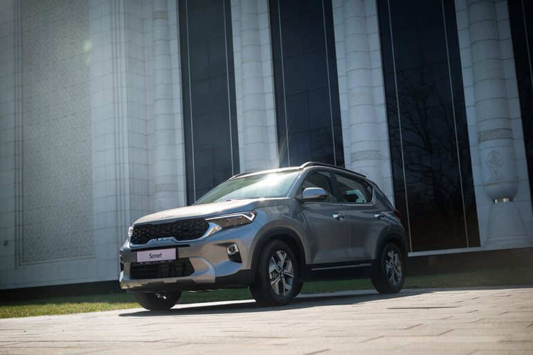

Защита кузова и днища
Плёнка на капот и пороги, антигравий, защита картера, подкрылки. Раздел про то, что первым страдает на наших дорогах и чем это закрывают.
- Плёнка и антигравий
- Защита картера
- Локеры и подкрылки
- Брызговики
Аксессуары и тюнинг
Sonet приезжает из салона уже неплохим, но почти каждый что-то доделывает под себя. Здесь собираем то, что владельцы реально ставили на машину: что прижилось, что оказалось выброшенными деньгами и на что стоит смотреть при выборе.
Раздел наполняется опытом участников клуба — магазином мы не торгуем и цен не ставим

Плёнка на капот и пороги, антигравий, защита картера, подкрылки. Раздел про то, что первым страдает на наших дорогах и чем это закрывают.
Штатные R16 с высоким профилем — не единственный вариант. Что ставят на зиму, что меняют на лето и как это сказывается на клиренсе и расходе.
Штатные рейлинги позволяют возить сверх 385 литров основного отсека. Поперечины, боксы, велокрепления и то, как всё это влияет на расход и шум.
Самая обжитая часть машины: коврики, шумоизоляция, органайзеры, подлокотник, оплётка руля. Здесь же — что помогает от жары и пыли.
Что делают со штатной оптикой, что вешают дополнительно и куда это подключают, чтобы не остаться с севшим аккумулятором и сгоревшим блоком.
Штатная система с Apple CarPlay и Android Auto закрывает многое, но не всё. Регистраторы, круговой обзор, звук и держатели для телефона.
В группах владельцев одни и те же вопросы повторяются из месяца в месяц. Ради этого сайт и есть: ответы на них собраны здесь один раз, а спорное и срочное по-прежнему решается в чатах. Групп мы не ведём — просто держим ссылки в одном месте.